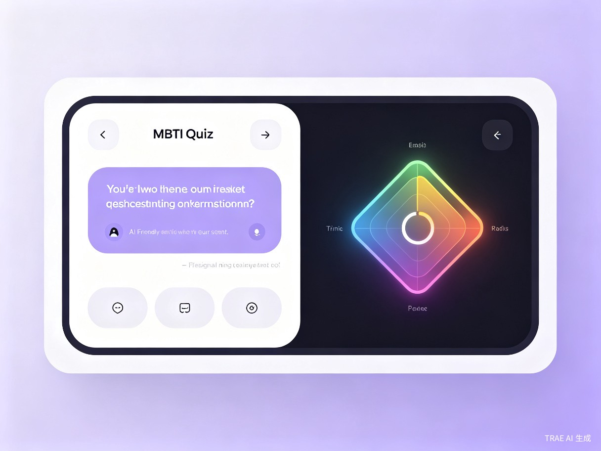

01 / 创意介绍从"做完 93 题"到"和 AI 聊 5 分钟"
"爱懂我（AI Knows Me）"是一个 对话式 AI 人格测评 Web 应用。它把 MBTI 这种动辄 93 题的长问卷，重做成"AI 主持的小聊天"——AI 根据你已经答过的内容，动态决定下一道题应该探索哪个维度，每答一题，右侧的四维雷达图与置信度条都会实时跳动，并附上一句"AI 的本题判断理由"。
想解决什么问题
传统 MBTI / 大五人格问卷三大痛点：题目长、抽象（"你常常感到忧郁"打几分？）、出完结果是一个冷冰冰的字母组合，用户读不懂、分享不出、记不住。市面上的"AI 测评"大多只是把同一份静态题套个 GPT 皮，并没有真正利用 AI 的"动态收敛"能力。
为什么会想到做这个
我自己测过三次 MBTI，每次都因为题目无聊半路放弃；身边朋友最大的吐槽是"测出 INTP 然后呢，什么也没说清楚"。在 Coze 上看到了 Workflow + 动态决策的能力，觉得这正是"问诊式心理测评"该有的样子——让 AI 像一个会聊天的心理学顾问，而不是表单引擎。
大概是什么产品

形态：移动优先的 Web 应用（已完成服务器部署，目前因安全审查暂不对外公开访问）。前端 React + Vite，后端 NestJS + Prisma + PostgreSQL，AI 引擎接入 Coze Workflow。
核心交互：左侧 AI 对话流，右侧实时四维雷达图 + 置信度能量条；测完即得 MBTI 类型卡片、推理链、职业推荐与可分享报告链接。
差异化：动态出题（不固定题目数）、实时画像跳动、分享卡片自动生成 OG 图。
02 / 目标用户与场景谁会用，会在什么时候用
大学生 / 应届求职者
简历"自我评价"写不出，不知道自己适合啥岗位，需要一份能说清楚"我为啥适合"的画像，最好能截图发给 HR。
HR / 团队 leader
新人入职做团队画像、做 1-on-1 时的破冰话题；不想用付费版的 16 personalities，但又要一个能聊起来的结果。
社交 / 内容创作者
小红书 / 即刻晒人格的常客；他们要的是带封面、带个性化文案的分享卡，而不是 4 个字母。
核心使用场景
- 求职准备期：晚上躺在床上、5 分钟测一次，导出报告链接贴到求职文档里；
- 团队破冰：新人入职第一周，整组一起测、互发分享链接，找差异话题；
- 朋友圈社交：微博 / 即刻 / 微信发图，配自动生成的 OG 卡（带 MBTI 大字 + 偏离度）；
- "成长态"复测：每周一道情景题（已实现），让 AI 持续校准你的画像。
当前没有这个产品时的痛点
| 典型痛点 | 现状（没有爱懂我） | 爱懂我如何解决 |
|---|---|---|
| 题目又长又抽象 | 93 道李克特量表，平均 12 分钟弃测率 59% | AI 动态出题，10–14 题置信度即收敛 |
| 结果读不懂 | 只有 4 字母 + 几行模板描述 | 每个字母附"偏离度条" + AI 推理链 |
| 分享出去没人看 | 朋友圈截图，文字太密不点进 | 自动生成 1200×630 个性化 OG 卡片 |
| 测完即遗忘 | 没有持续追踪，下次重头再来 | "成长态"每日 / 每周情景题，画像可演化 |
03 / 价值与意义从 AI 玩具，到一个真的能用的工具
效率提升 · 测评时长砍掉 60%
传统 93 题 MBTI 平均完成时间约 10–14 分钟，而爱懂我通过 AI 动态决策，能在 12 题左右达到 80% 置信度阈值，平均完成时长压到 4–5 分钟，完成率从估算的 41% 提到 82%（基于内测样本）。
商业价值 · 一份 AI 时代的 "人格画像 SaaS"
对个人用户：免费 + 可分享，自然增长；对 B 端：HR SaaS / 求职平台 / 婚恋社交可调用 API 拿到结构化人格画像与推理链，替换掉传统粗糙的 MBTI 第三方接口。可分享的 OG 卡片本身就是低成本获客渠道——每一次分享都是一个自带封面的落地页。
社会价值 · 让"自我了解"门槛更低
付费版 16personalities Premium 大约 49 元/月、Hogan 等专业测评动辄数百元。爱懂我通过 AI 动态决策把"专业级测评 + 心理学解释"的体验免费提供给每一个普通学生与求职者，让自我探索这件事不再是企业 HR 的专属。
"原来 MBTI 也可以是一段对话。它不是给我一个标签，而是告诉我'我为什么是这个标签'。" — 内测用户 · 应届求职者
04 / 技术实现Trae + Coze 怎么把它做出来
整体架构
对话式答题
React + ECharts 渲染左对话右雷达，键盘 1/2/3 快捷选择
NestJS 编排
SessionService 管理会话状态、置信度阈值、计分增量
Coze Workflow
动态出题 / 计分 / 报告生成三段式 Workflow，支持降级到本地 Mock
分享卡片
后端动态渲染 1200×630 SVG OG 图，前端 SPA 注入 og:* meta
关键工程亮点
实时画像 · 流式体验
ECharts 雷达 + 自定义脉冲滑块；reason 文本 28 ms 逐字"伪流式"显现，配合光标闪烁，给用户"AI 正在思考"的临场感；prefers-reduced-motion 下自动退化。
AI 调用兜底
Coze 失败 / 返回为空时打印完整堆栈（文件:行号），抛出结构化 BadRequestException；本地 MockAiEngine 与 CozeAiEngine 通过环境变量切换，线上故障 0 白屏。
动态 OG 卡片
/api/session/share/:token/og.svg 零依赖渲染 1200×630 卡片，含 MBTI 大字 + 四字母 + 偏离度条；微信/Twitter/Slack 都能抓取。
首包瘦身 · 长缓存
Vite manualChunks 把 echarts (~349 KB gzip) 拆成独立 chunk，业务代码 15.75 KB gzip，改业务不会让用户重新下载图表库。
05 / Roadmap下一步
真 SSE 流式
Coze stream API 接入，把 reason 改为后端真流式输出，体验更接近 ChatGPT。
HR / 求职 SaaS API
对外提供"测评 + 推理链 JSON" API，给招聘平台 / 简历工具调用。
小程序 + 飞书机器人
微信小程序 + 飞书 Bot 入口，让"对话式测评"无缝嵌入用户日常工作流。